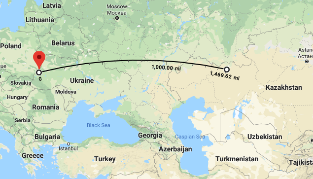

Father’s Day 2018
My Dad, who died a few years ago, was a loving, gentle, brilliant man who had a tough childhood. His parents separated when he was young. The Germans and Russians took turns invading his town. He and his family were deported to Kazakhstan. He, my grandmother and his uncle eventually ended up in an American-run displaced person’s camp, and they emigrated to Australia in late 1948. After arriving in Australia as a 16 year-old who had intermittent schooling and little knowledge of English, he went to medical school, became a physician and married my wonderful mom. My family moved to the United States when I was a little kid. My Dad overcame a lot of trauma to become the loving man he was, but one thing that he never seemed to shake was being jailed and taken from his parents. It’s a story that needs to be told today.
In September 1939 my grandparents had already separated and my nearly-seven-year-old Dad was living with my grandmother and her extended family in Janów Poland, now known as Ivano-Frankove, Ukraine. Janów was just east of the line where the Soviets and Germans agreed to split Poland – so close that the Nazis occupied it first, but pulled back to allow the Soviets to take over that area in late September. In April 1940, the Soviet authorities came to my father’s home and ordered the family to be at the train station by midnight. My Dad’s uncles were quick-thinking enough to throw as much food and clothing as they could into duvet covers (suitcases were too small) before they were put on a train. My Dad didn’t remember how long they were on the train, but according to other people deported that day it took 11 days to get to to Aktubinsk (now Aktobe) Kazakhstan, where they were to live in a mud hut and work on a sovkhoz – a Soviet state-owned farm.

My grandfather was not pleased to have his only child shipped off to some godforsaken province of Stalin’s empire and went to take my dad back to his family home in Lwów. That’s why my father and grandfather were on a train when the NKVD, Stalin’s secret police, arrested them for traveling without the correct papers. For good measure they arrested my grandmother too. The NKVD was thorough in its cruelty.

My father was taken from his parents and put in a juvenile jail. He was told he might not see his parents again. The older kids in the jail beat him because he was a Jew, or because they could, or both. They stole his shoes. My father was so shaken and distraught he wet the bed. The jailers took his mattress. My grandmother, for her part, was tortured with sleep deprivation and faced the terrifying prospect that she had lost her only child. After some weeks she agreed to work for the NKVD, translating letters from Yiddish into Russian, and they let her have her son back.
My father used to tell us stories about the absurdities of life in the Soviet Union. The first day of school when all of the students had to paste over the picture of General Tukhachevsky in their history books – the former hero had become a non-person. The bedbugs that were so numerous that his family poured boiling water down the bedpost to try to kill them. The threat of starvation – grain left the Soviet farm, but no food came back. People could get lost in a snowstorm on the way to the outhouse and not be found until Spring. Animal dung was such a valuable commodity for cooking and heating that “the richest person was the one with the biggest pile of shit outside his house.” About all of that, he could shake his head and laugh. But he was forever haunted by being taken from his parents. Of everything, for my Dad, those were the true hard times.
A small irony here is that my dad became a Republican voter – he was deeply affected by the behavior of a too-powerful government and thought that if you kept government small it wouldn’t be able to oppress you. To me, the dangers posed by government do not come from taxing people so you can send Social Security checks or pay doctors; they come from leaders’ willingness to use cruelty to get what they want – a power available to governments of all sizes. Of course, my Dad was a National Review/PBS Newshour Republican, not a Fox News one, and he would have opposed Trump just as he opposed Nixon – he could smell a lying demagogue a mile off.
My father would be particularly shaken by the direct line from the people who took him from his parents and jailed him to the people perpetrating America’s current nightmare. The NKVD became the KGB which trained Vladimir Putin and morphed into the GRU – you know, the folks who helped elect Donald Trump. If you hear that taking children from their parents because they don’t have the right immigration papers is a Stalinist tactic, that’s because it is exactly a Stalinist tactic. Trump is copying Stalin, but America has not yet given him the same powers to suppress dissent. My Dad couldn’t fight back against the people who took him from his parents then. We can fight back against the people who are doing this to children now.